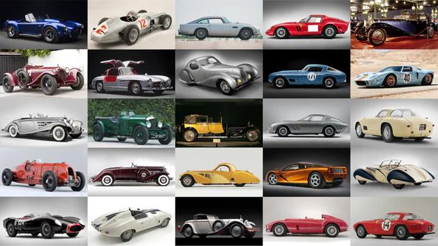
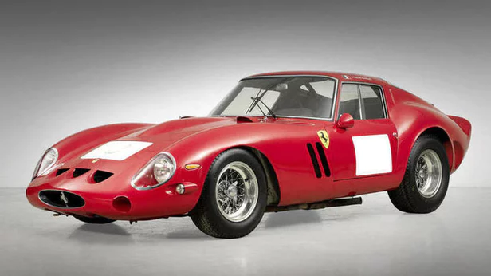
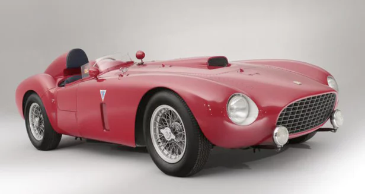

The top 100 most expensive cars of all time
We've assembled the list of the 100 most expensive cars ever sold at auction, all the images, all the links to the o icial catalogue descriptions, and analysis so that you can see the popular snapshot of the hyper-rare car marketplace in one article.
NOVEMBER 2017
All of these cars are not just rare but beautiful, and approach the intersection of art and automobiles. It's little wonder that McKeel Hagerty, founder of the world's largest classic car insurance company, recently One-off Land Rover spit-roasts meat off the engine,churns butter at the wheels referred to the Ferrari 335S Spider Scaglietti that sold for US$35.7 million in February 2016 as a "Mona Lisa Car".
1 | 1962-63 Ferrari 250 GTO Berlinetta

US$38,115,000
The most expensive Italian car sold at auction
August, 2014
Monterey, California, U.S.
Official Bonhams Auction Page
2 | 1957 Ferrari 335S Spider
US$35,712,945 (sold for €32,075,200)
February, 2016
Paris, France
Official Artcurial Auction Page
3 | 1954 Mercedes-Benz W196 Silver Arrow
US$29,600,000 (sold for £19,601,500)
The most expensive German car ever sold at auction.
The most expensive Mercedes-Benz ever sold at auction.
July, 2013
West Sussex,United Kingdom
Official Bonhams Auction Page
4 | 1956 Ferrari 290 MM
US$28,050,000
December, 2015
New York, U.S.
Official RM Sotheby's Auction Page
5 | 1967 Ferrari 275 GTB/4 S NART Spider
US$27,700,000
August, 2013
Monterey, California, U.S.
Official RM Sotheby's Auction Page
6 | 1964 Ferrari 275 GTB/C Speciale
US$26,400,000
August, 2014
Monterey, California, U.S.
Official RM Sotheby's Auction Page
7 | 1955 Jaguar D-Type
US$21,780,000
The most expensive British car ever sold at auction.
The most expensive Jaguar ever sold at auction.
August, 2014
Monterey, California, U.S.
Official RM Sotheby's Auction Page
8 | 1939 Alfa Romeo 8C 2900B Lungo Spider by Touring
US$19,800,000
The most expensive pre-WW2 car ever sold at auction
August, 2016
Monterey, California, U.S.
Official RM Sotheby's Auction Page
9 | 1961 Ferrari 250 GT California Spider
US$19,800,000
The most expensive pre-WW2 car ever sold at auction
August, 2016
Monterey, California, U.S.
Official RM Sotheby's Auction Page
10 | 1954 Ferrari 375-Plus Spider Competizione

US$18,465,733 (sold for €16,288,000)
February, 2015
Paris, France
Official Artcurial Auction Page